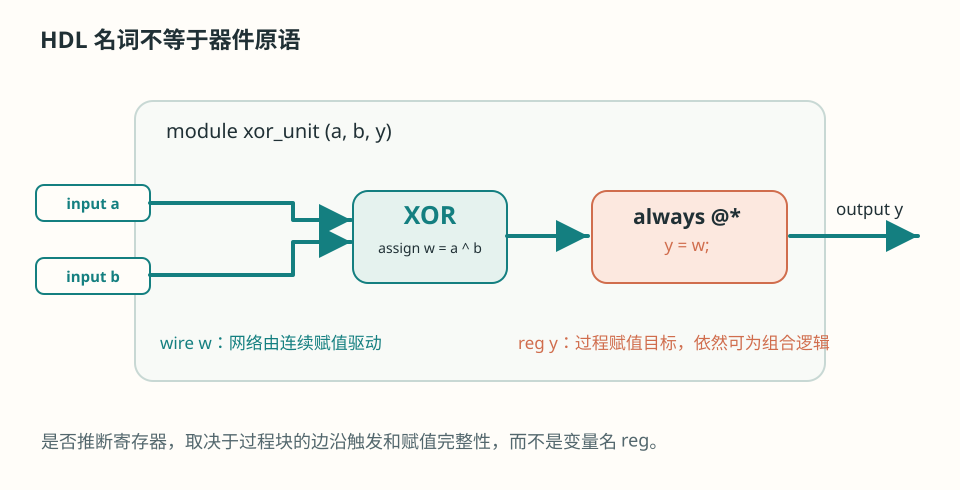
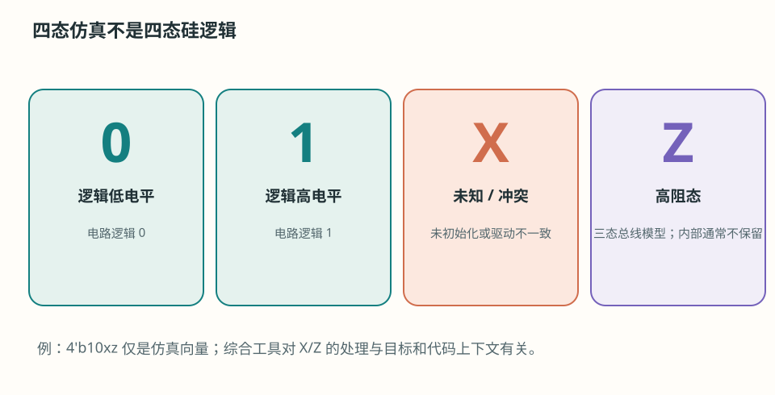

Verilog：描述硬件，而不是执行脚本
从模块、端口与信号到四态仿真、位宽和 testbench，建立“语法—电路”之间的可靠联系。
01 / 一段 Verilog 会变成什么电路？
写下 assign y = a ^ b;，芯片是否会先“读取 a”，再“读取 b”，最后“执行异或”？不会。只要设计被综合成功，输入与输出之间存在持续工作的组合逻辑。
Verilog 是硬件描述语言。module 定义可以实例化的硬件层级，端口描述模块与外部的连接，信号连接层级内的数据通路。部分语言结构（例如 testbench 的时间延迟、文件读写）用于仿真，并不具备通用的可综合电路意义。

语法层面，声明 wire 常用于连接连续驱动的网络；reg 是过程赋值的变量类型。reg 不一定代表物理寄存器。如果组合逻辑的赋值覆盖所有情况，它仍可被综合成没有状态的电路。
02 / 模块、端口、位宽和实例化
下面构建一个有两个 4 位输入、一个选择输入的 4 位多路选择模块：
module mux2_4 (
input wire [3:0] a,
input wire [3:0] b,
input wire sel,
output wire [3:0] y
);
assign y = sel ? b : a;
endmodule
module top (
input wire [3:0] left, right,
input wire select,
output wire [3:0] result
);
mux2_4 u_mux (
.a(left),
.b(right),
.sel(select),
.y(result)
);
endmodule[3:0] 定义 4 位向量；sel 是 1 位。mux2_4 u_mux (...) 创建模块实例，类似把一个可复用电路块连接到顶层的引脚。端口连接支持按名称绑定，推荐优先采用这种形式，减少位置顺序变化导致的错误。
Verilog 中的显式位宽很重要：未标注位宽的整数常量、符号扩展、截断和混合有符号表达式会影响结果。写算术时应明确规定输出宽度，并在边界值上验证。
{1'b0, a} + {1'b0, b}，并接入 5 位目标。03 / 连续赋值和过程赋值不是一回事
assign 描述对网络持续有效的驱动关系，输入变更后会重新求值。always @(*) 是敏感列表自动展开的组合过程块，过程内通常使用阻塞赋值 = 描述中间计算与输出。
// 两种等价的组合逻辑写法
module xor_assign (
input wire a, b,
output wire y
);
assign y = a ^ b;
endmodule
module xor_proc (
input wire a, b,
output reg y
);
always @(*) begin
y = a ^ b;
end
endmodule这两种写法对二值输入给出相同的异或输出，而且没有需要保存的状态。它们的综合映射通常可以等价优化，但“最终一定是一个特定物理门”不能凭源代码保证。
一个过程变量不应被多个互相竞争的组合过程驱动。建议以单一清晰的过程决定一个逻辑输出，避免多驱动、组合环路与难以审查的隐含优先级。
04 / X 和 Z 是仿真值，不是另外两种电压

Verilog 具备四态逻辑：0、1、x、z。x 常见于未初始化信号和驱动冲突；z 是高阻状态，常见于三态总线和 I/O 模型。对于在 FPGA 内部进行逻辑运算的电路，目标综合工具可能将不完整驱动等价化为 MUX 或其他结构。
| 表达式 | 作用 | 教学提醒 |
|---|---|---|
== | 逻辑相等比较 | 参与 X/Z 时结果可能为 X |
=== | 四态完全相等 | 常用于 testbench 检查 X/Z |
& / | | 按位布尔运算 | 检查每一位传播规则 |
&& / || | 逻辑条件运算 | 不是按位运算 |
当使用 casex 和 casez 时还会引入通配匹配语义，可能掩盖未初始化问题。初学设计优先选择明确的 case 规则，除非确实需要通配编码并已分析风险。
05 / 用编译器和 testbench 证明代码含义
功能仿真的最小闭环是：模块 → 激励 → 期望值 → 比较 → 成功 / 失败报告。下面针对 2:1 MUX 检查两个选择路径：
module tb;
reg [3:0] a = 4'ha, b = 4'h5;
reg sel = 1'b0;
wire [3:0] y;
mux2_4 dut (.a(a), .b(b), .sel(sel), .y(y));
initial begin
#1;
if (y !== 4'ha) $fatal(1, "sel=0");
sel = 1'b1;
#1;
if (y !== 4'h5) $fatal(1, "sel=1");
$display("PASS mux2_4");
$finish;
end
endmodule把 mux2_4 和 testbench 保存到一个文件 demo.v，执行 iverilog -g2012 -s tb -o /tmp/demo.vvp demo.v && vvp /tmp/demo.vvp。期望看到 PASS mux2_4。这里用 #1 给组合结果一个仿真调度机会；它仅属于测试台，不是让真实电路延迟 1ns 的承诺。
练习：把 4 位 mux 改成 8 位，为什么不能只改输出端口？
数据端口 a、b 和输出 y 的宽度必须保持一致，实例化模块的连接也要相应调整；否则可能发生截断或零扩展，虽然部分工具只给出警告。